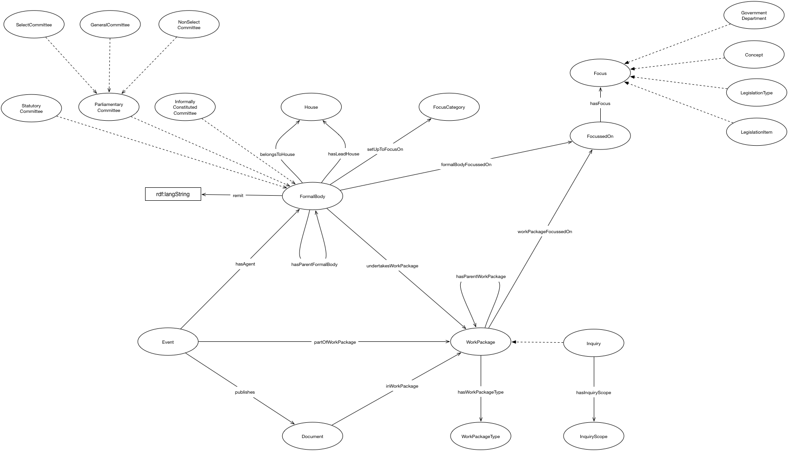

IRI: http://parliament.uk/ontologies/formal-body/BusinessItem
IRI: http://parliament.uk/ontologies/formal-body/Focus
IRI: http://parliament.uk/ontologies/formal-body/FocusCategory
IRI: http://parliament.uk/ontologies/formal-body/FormalBody
IRI: http://parliament.uk/ontologies/formal-body/GeneralCommittee
IRI: http://parliament.uk/ontologies/formal-body/House
IRI: http://parliament.uk/ontologies/formal-body/InformallyConstitutedCommittee
IRI: http://parliament.uk/ontologies/formal-body/Inquiry
IRI: http://parliament.uk/ontologies/formal-body/InquiryScope
IRI: http://parliament.uk/ontologies/formal-body/NonSelectCommittee
IRI: http://parliament.uk/ontologies/formal-body/ParliamentaryCommittee
IRI: http://parliament.uk/ontologies/formal-body/SelectCommittee
IRI: http://parliament.uk/ontologies/formal-body/StatutoryCommittee
IRI: http://parliament.uk/ontologies/formal-body/WorkPackage
IRI: http://parliament.uk/ontologies/formal-body/WorkPackageType
IRI: http://parliament.uk/ontologies/formal-body/belongsToHouse
IRI: http://parliament.uk/ontologies/formal-body/formalBodyFocus
IRI: http://parliament.uk/ontologies/formal-body/formsPartOf
IRI: http://parliament.uk/ontologies/formal-body/hasAgent
IRI: http://parliament.uk/ontologies/formal-body/hasInquiryScope
IRI: http://parliament.uk/ontologies/formal-body/hasLeadHouse
IRI: http://parliament.uk/ontologies/formal-body/hasParentFormalBody
IRI: http://parliament.uk/ontologies/formal-body/hasParentWorkPackage
IRI: http://parliament.uk/ontologies/formal-body/hasWorkPackageType
IRI: http://parliament.uk/ontologies/formal-body/hasFocusCategory
IRI: http://parliament.uk/ontologies/formal-body/remit
IRI: http://parliament.uk/ontologies/formal-body/undertakesWorkPackage
IRI: http://parliament.uk/ontologies/formal-body/workPackageFocus
IRI: http://parliament.uk/ontologies/formal-body/remit
This HTML document was obtained by processing the OWL ontology source code through LODE, Live OWL Documentation Environment, developed by Silvio Peroni.